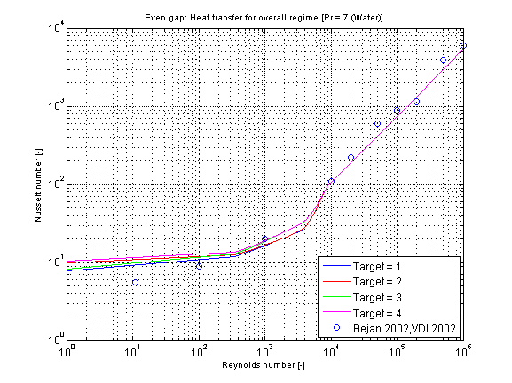

Calculation of the mean convective heat transfer coefficient kc for an laminar or turbulent fluid flow through an even gap at different fluid flow and heat transfer situations.
Functions kc_evenGapOverall and kc_evenGapOverall_KC
There are basically three differences:
-
The function kc_evenGapOverall is using kc_evenGapOverall_KC but offers additional output variables like e.g. Reynolds number or Nusselt number and failure status (an output of 1 means that the function is not valid for the inputs).
-
Generally the function kc_evenGapOverall_KC is numerically best used for the calculation of the mean convective heat transfer coefficient kc at known mass flow rate.
-
You can perform an inverse calculation from kc_evenGapOverall_KC, where an unknown mass flow rate is calculated out of a given mean convective heat transfer coefficient kc
Restriction
- developed fluid flow
- heat transfer from one side of the gap (target=1)
- heat transfer from both sides of the gap (target=2)
- undeveloped fluid flow
- heat transfer from one side of the gap (target=3)
- Prandtl number 0.1 ≤ Pr ≤ 10
- heat transfer from both sides of the gap (target=4)
- Prandtl number 0.1 ≤ Pr ≤ 1000
- turbulent regime always calculated for developed fluid flow and heat transfer from both sides of the gap (target=2)
Geometry and Calculation
This heat transfer function enables a calculation of heat transfer coefficient for laminar and turbulent flow regime. The geometry, constant and fluid parameters of the function are the same as for
kc_evenGapLaminar and kc_evenGapTurbulent.
The calculation conditions for laminar and turbulent flow is equal to the calculation in kc_evenGapLaminar
and kc_evenGapTurbulent. A smooth transition between both functions is carried out between 2200 ≤ Re ≤ 30000 (see figure below).
Verification
The mean Nusselt number Nu representing the mean convective heat transfer coefficient kc for Prandtl numbers of different fluids in dependence of
the chosen fluid flow and heat transfer situations (targets) is shown in the figures below.
- Target 1: Developed fluid flow and heat transfer from one side of the gap
- Target 2: Developed fluid flow and heat transfer from both sides of the gap
- Target 3: Undeveloped fluid flow and heat transfer from one side of the gap
- Target 4: Undeveloped fluid flow and heat transfer from both sides of the gap
The verification for all targets is shown in the following figure w.r.t. the reference:

References
- Bejan,A.:
- Heat transfer handbook.
Wiley, 2003.
- VDI:
- VDI - Wärmeatlas: Berechnungsblätter für den Wärmeübergang.
Springer Verlag, 9th edition, 2002.